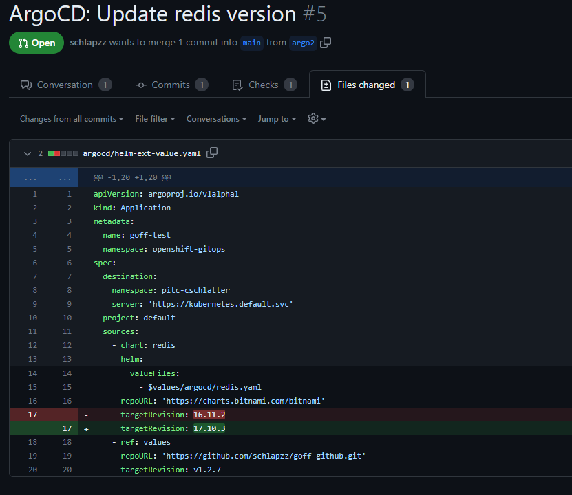

GOFF test
Inspired from Kostis Kapelonis (Codefresh.io) talk at the KubeCon about How to Preview and Diff Your Argo CD Deployments we relased our own GitOps Diff tool (Goff). This tool helps you to preview your changes in your GitOps Repository.
How it works
Example for ArgoCD Application diff
#Render all ArgoCD manifests in directory from source branch
goff argocd app "./source/argocd" --repo-server="repo-server:8081" --output-dir=/tmp/source/
#Render all ArgoCD manifests in directory from target branch
goff argocd app "./target/argocd" --repo-server="repo-server:8081" --output-dir=/tmp/target/
#Diff rendered Kubernetes manifests
goff diff "/tmp/source" "/tmp/target" --output-dir .
- Setup your pipeline in your GitOps repository. You can find examples integrations for Github, Gitlab and Gitea here
- Create a new branch and commit your changes in your ArgoCd Application 
- Run your pipeline, Goff renders the Appication into manifests calculate the diff between the source and target branch.
- Check the auto generated comment in your Pull request and review the changes

Installation
You can download the latest release here
Or you can use the pre built Docker image docker pull quay.io/puzzle/goff:test
The image includes following tools:
- goff test
- Gitlab CLI
- Gitea CLI
- Helm
- Git
Usage
GitOps Diff Tool
Usage:
goff [command]
Available Commands:
argocd Render manifests from ArgoCD resources
completion Generate the autocompletion script for the specified shell
diff Diff files [sourceDir] [targetDir]
help Help about any command
kustomize Generate a DOT file to visualize the dependencies between your kustomize components
split Split manifests [manifestFile]
Flags:
-h, --help help for goff
-l, --logLevel string Set loglevel [debug, info, error] (default "error")
Use "goff [command] --help" for more information about a command.
Supported Tools
| Tooling | Support |
|---|---|
| Plain manifests | ✅ |
| Helm | ✅ Supported through plain manifests |
| Kustomize | ✅ |
| ArgoCD Application | ✅ Needs a local ArgoCD Repo server instance |
| ArgoCD ApplicationSet | 🚧 Not yet fully supported (List generators only) |